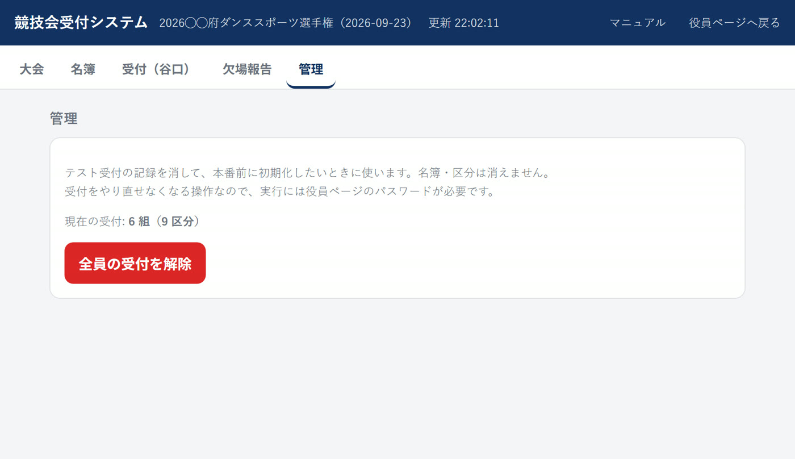

競技会当日の受付を、会場の複数の端末（パソコン・タブレット・スマートフォン）で同時に行うためのシステムです。 受付した内容はすべての端末にすぐ反映され、そのまま欠場者の一覧を作って印刷できます。
1. このシステムでできること
紙の名簿に丸を付ける代わりに、背番号を入力して受付します。受付は種目（区分）ごとに記録されるので、 「スタンダードだけ出てラテンは欠場」といった組も、そのまま扱えます。
| 受付 | 背番号を入れて受付を押すと、その組の全種目を受付します。一部の区分だけの組は一部受付から選びます。 |
|---|---|
| 欠場報告 | 種目ごとに「出場」と「欠場」の一覧が自動で出ます。欠場者の背番号が受付に残っているかの確認も記録できます。 |
| 欠場者一覧 | 受付締切の時刻ごとに、欠場した背番号だけを大きく並べたページを印刷できます。進行席へ渡す用です。 |
| 同時に使える | 受付レーンを分けて、何台の端末からでも同時に受付できます。3秒ごとに自動で最新になります。 |
全体の流れ
- 【事前】大会を作る 大会名・開催日・公認番号を入れ、DCSの選手名簿CSVを取り込みます。
- 【事前】種目を整える 種目名と受付締切の時刻を入れます。
- 【当日】受付する 背番号を入れて受付。取りこぼしは画面の一覧で分かります。
- 【当日】欠場を報告する 種目ごとの欠場一覧を出し、印刷して進行席へ渡します。
2. 開き方とログイン
ブラウザで https://jdsf-seibu.com/uketsuke.html を開きます。 役員ページの右上のボタン「🎫 競技会受付システム →」からも開けます。

3. 【準備】大会を作る
「大会」タブを開き、下の「新しい大会を作る」に入力します。

- サイトの競技会一覧から選ぶ プルダウンから選ぶと、大会名・開催日・公認番号が自動で入ります。一覧に無い大会は手入力してください。
- 公認番号 この大会を開くときの合言葉になります。ログインできる人でも、公認番号を知らなければその大会の名簿は開けません。
- 選手名簿CSV DCS（JDSF競技会支援システム）の「選手名簿ファイル処理」で書き出したCSVを、そのまま選べます。文字コードの変換や項目名の追加は不要です。
- 「作成する」を押す 大会が作られ、CSVがあれば同時に名簿へ取り込まれます。

4. 【準備】種目を整える
「名簿」タブの上に種目マスタがあります。名簿CSVの取込で見つかった種目コードが仮登録されているので、 種目名と受付締切の時刻を入れて「種目マスタを保存」を押します。

- 受付締切 タイムテーブルの受付締切時刻を 10:30 の形で入れます。同じ時刻の種目は、欠場者一覧でまとめて1枚に出ます。
- 「コードから種目名を補う」 JAS・JBL などの標準的なコードなら、種目名を自動で埋められます。埋めたあと必要に応じて直してください。
5. 【準備】名簿を確かめる
同じ「名簿」タブの下に、取り込んだ組の一覧が出ます。背番号・氏名・所属で検索できます。

- 当日エントリーの追加や、背番号の変更はこの画面で行えます。
- 出場種目のチェックが実際と違うと、欠場者一覧が合わなくなります。取込後にひととおり確認してください。
6. 【当日】受付する
「受付」タブを開きます。はじめに右上の受付担当者名を変更で自分の名前を入れてください。 誰が受付したかが記録に残ります（この端末に覚えます。毎回入れ直す必要はありません）。

受付のしかた（2通り・どちらでも同じ）
| ボタンで受付 | 背番号を入れて受付を押す。1回の操作で受付できます。 |
|---|---|
| Enter 2回で受付 | 背番号を入れてEnter。1回目は確認だけで、氏名と出場種目が出ます。合っていればもう一度Enterで受付します。 打ち間違えた背番号がそのまま受付されないよう、確認を挟んでいます。 |


7. 【当日】一部の区分だけ受付する
「スタンダードだけ出て、ラテンは欠場」のように、一部の区分だけ出る組のときに使います。 背番号を入れて一部受付を押すと、その組のエントリー区分がボタンで出ます。


- 全部の区分に出るなら、この画面の全種目を受付でまとめて受付できます。
- すでに受付した区分（緑）をもう一度押すと、その区分の受付を取り消します。
8. 【当日】間違えたとき
| 背番号を間違えて受付した | 受付状況のその行の取消を押します。その組の全種目の受付が取り消されます。 |
|---|---|
| 区分を間違えた／1つ増やしたい | 受付状況のその行の区分を押すと、区分の選択画面が開きます。押し直して直してください。 |
| 名簿に無いと言われる | 背番号の打ち間違いか、名簿に入っていない組です。「名簿」タブで確認し、当日エントリーなら追加してください。 |
9. 【当日】欠場報告と背番号在庫
「欠場報告」タブで種目を選ぶと、その区分を受付していない組＝欠場と、受付した組＝出場が分かれて出ます。

背番号在庫のチェック
欠場者の背番号が受付に残っている（＝本当に来ていない）ことを確認したら、その組の背番号在庫にチェックを入れます。 担当者名は受付担当者とは別に持てるので、右上の変更で確認した人の名前を入れてください。
10. 【当日】欠場者一覧を印刷する
「欠場報告」タブの欠場者のみのページを開くを押すと、欠場した背番号だけを大きく並べたページが開きます。 進行席へ渡す用です。

- 表示する範囲を選ぶ 「11:00 JAS, MAS, GAS」のように、受付締切の時刻でまとめて選べます。
- 最新にする 受付は進み続けるので、印刷する直前に押してください。
- 印刷する ブラウザの印刷画面が出ます。ヘッダーやボタンは印刷されません。
このページの上にも受付システムと同じタブがあります。印刷したあと、そのまま「受付」や「欠場報告」へ戻れます。
11. 複数の端末で使う
- 受付レーンごとに端末を分けて、同時に受付できます。同じ大会を開くだけです。
- 画面は3秒ごとに自動で最新になります。手で更新する必要はありません。
- 画面の右上に更新 ○:○○:○○ と出ます。ここが動いていれば、その端末は最新です。
12. 本番前に受付記録を消す
練習や動作確認で受付した記録を消して、本番前の状態に戻せます。「管理」タブの 全員の受付を解除です。

13. 困ったとき
| スマホの受付がパソコンに出ない | どちらかが本番以外のURLを開いています。両方のアドレスバーが jdsf-seibu.com か確認してください。 |
|---|---|
| 「この大会を開けなくなりました」と出た | ログインが切れたか、大会が消されています。大会を選び直してログインし直してください。 |
| 受付したのに欠場に出る | その区分を受付していません。受付状況でその組の区分が灰色になっていないか確認し、区分から受付してください。 |
| エントリーしていない区分を受付したい | できません。名簿の出場種目を直してから受付してください（「名簿」タブ）。 |
| 背番号を入れても何も起きない | 大会を開いていない可能性があります。「大会」タブで「開く」を押してください。 |
| 会場のネットが不安定 | 受付の記録はサーバーに置いています。通信が切れている間は他の端末に伝わりません。復旧後、右上の更新時刻が動いていることを確認してください。 |
受付システム: https://jdsf-seibu.com/uketsuke.html